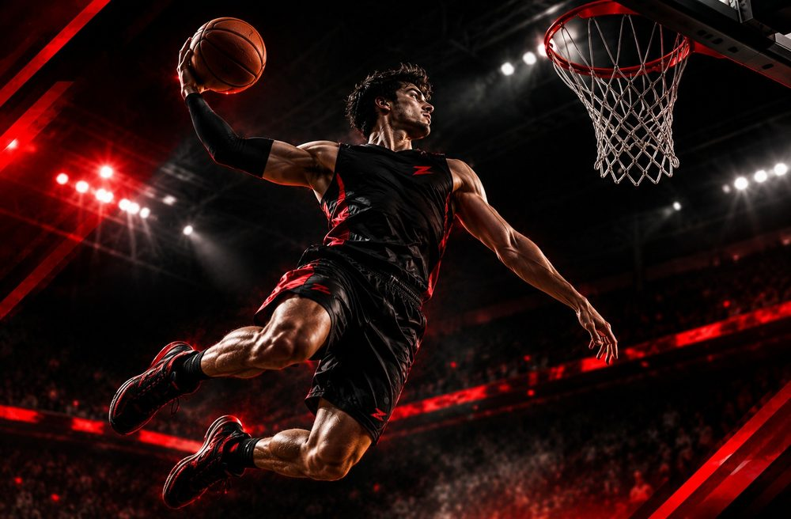
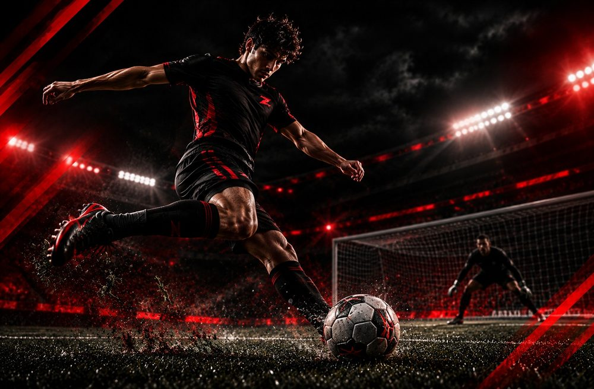
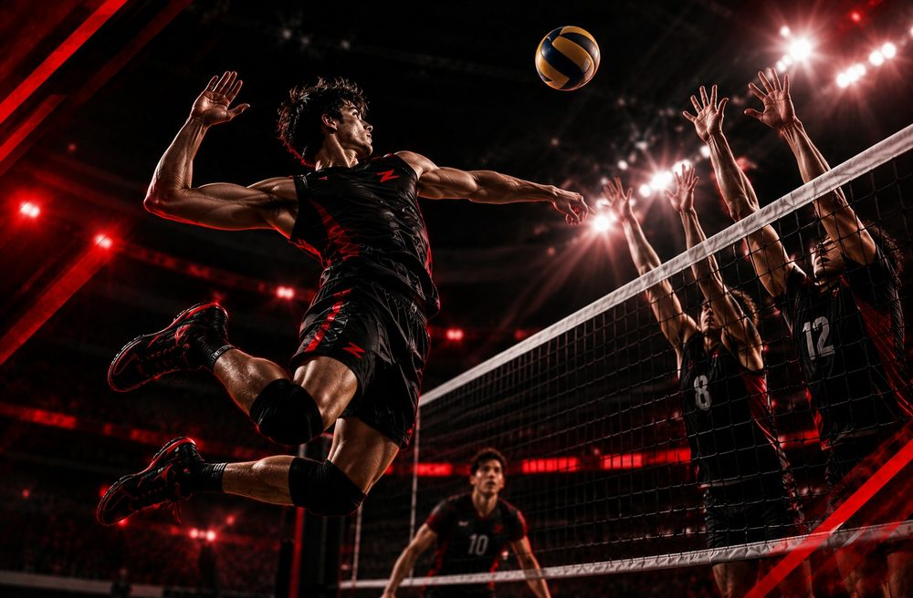
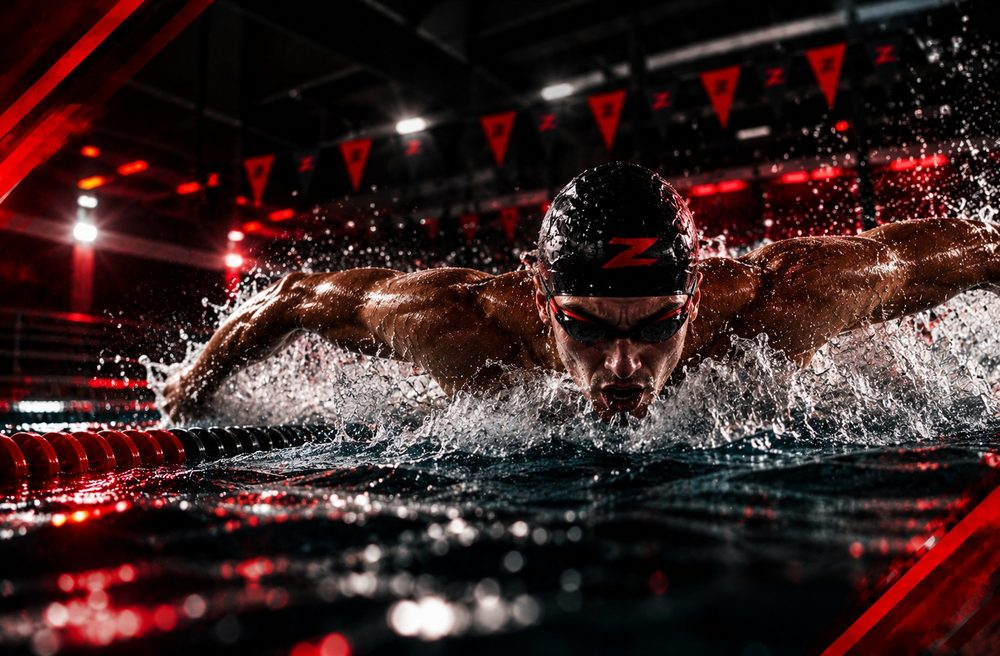

Disciplinas deportivas
Cada deporte desarrolla habilidades distintas. Prueba varios y quédate con el que más disfrutes: la constancia nace del gusto por lo que haces.

Baloncesto
- Coordinación
- Velocidad
- Trabajo en equipo
- Fundamentos

Fútbol
- Control del balón
- Resistencia
- Técnica
- Cooperación

Voleibol
- Recepción
- Saque
- Coordinación
- Trabajo en equipo

Atletismo
- Carreras
- Saltos
- Resistencia
- Habilidades motrices

Natación
- Técnica
- Coordinación
- Resistencia
- Seguridad acuática
Boxeo
- Coordinación
- Técnica
- Acondicionamiento
- Seguridad
Circuitos de ejercicios
Cada circuito indica el objetivo, los pasos, la dosis sugerida y qué cuidar. Son ejemplos educativos: adáptalos a tu nivel.
Calentamiento general
Objetivo: Preparar articulaciones y músculos.
- Camina o trota suave durante 2 minutos.
- Haz círculos con brazos, cadera y tobillos: 10 por lado.
- Rodillas al pecho y talones a glúteos: 30 segundos de cada uno.
- Cierra con 8 sentadillas lentas, sin peso.
Dosis sugerida: 5 a 8 minutos antes de cada sesión.
Cuida: Sube la intensidad poco a poco y evita rebotes bruscos.
Sentadillas
Objetivo: Fortalecer piernas y glúteos.
- Pies al ancho de los hombros, puntas ligeramente hacia afuera.
- Espalda recta, pecho arriba y abdomen firme.
- Baja como si te sentaras, con las rodillas alineadas con los pies.
- Empuja con los talones para volver a subir.
Dosis sugerida: 2 a 3 series de 8 a 12 repeticiones; descansa 45 a 60 segundos.
Cuida: Que las rodillas no se junten hacia dentro. Si es difícil, apóyate en una silla.
Flexiones adaptadas
Objetivo: Fortalecer pecho, brazos y abdomen.
- Apoya las manos en una pared, una mesa firme o el suelo con las rodillas apoyadas.
- Coloca las manos un poco más abiertas que los hombros.
- Mantén el cuerpo en línea recta y baja el pecho con los codos a unos 45°.
- Empuja hasta extender los brazos sin bloquear los codos.
Dosis sugerida: 2 a 3 series de 6 a 10 repeticiones.
Cuida: No dejes caer la cadera. Empieza por la pared y avanza de nivel poco a poco.
Plancha
Objetivo: Activar el abdomen y la espalda.
- Apoya los antebrazos bajo los hombros.
- Estira el cuerpo en línea recta y mira al suelo.
- Aprieta abdomen y glúteos.
- Respira con calma sin aguantar el aire.
Dosis sugerida: 3 repeticiones de 15 a 30 segundos; aumenta de forma gradual.
Cuida: Que la cadera no suba ni se hunda. Si duele la espalda baja, descansa.
Equilibrio
Objetivo: Mejorar la estabilidad y el control del cuerpo.
- Colócate junto a una pared o una silla para apoyarte.
- Levanta un pie y mantén la posición 20 a 30 segundos.
- Mira un punto fijo frente a ti.
- Cambia de pierna y repite.
Dosis sugerida: 3 repeticiones por pierna.
Cuida: Practica en una superficie firme y sin obstáculos.
Coordinación
Objetivo: Unir ritmo, agilidad y reacción.
- Marcha en el lugar llevando el brazo contrario a la rodilla.
- Salta la cuerda (o simula el movimiento) durante 30 segundos.
- Haz saltos laterales sobre una línea durante 20 segundos.
- Termina con un trote corto de 5 metros de ida y vuelta, con control.
Dosis sugerida: 3 rondas de los 4 ejercicios; 20 a 30 segundos cada uno y 30 segundos de pausa.
Cuida: Usa calzado adecuado y una superficie sin resbalones.
Antes de empezar: si tienes alguna condición médica, una lesión o dudas, consulta a un profesional de la salud o a tu docente de educación física. Detente si sientes dolor agudo, mareo o falta de aire inusual.
Semana de ejemplo para principiantes
| Día | Actividad | Duración |
|---|---|---|
| Lunes | Fuerza básica: sentadillas, flexiones adaptadas y plancha | 30 min |
| Martes | Actividad que disfrutes: caminar, bicicleta o deporte | 30 a 45 min |
| Miércoles | Circuito de coordinación y equilibrio | 30 min |
| Jueves | Descanso activo: caminata suave y estiramientos | 20 a 30 min |
| Viernes | Fuerza básica y calentamiento completo | 30 min |
| Sábado | Deporte o juego en equipo | 45 a 60 min |
| Domingo | Descanso total | — |
Ajusta los días y el tiempo a tu horario y a cómo te sientas.